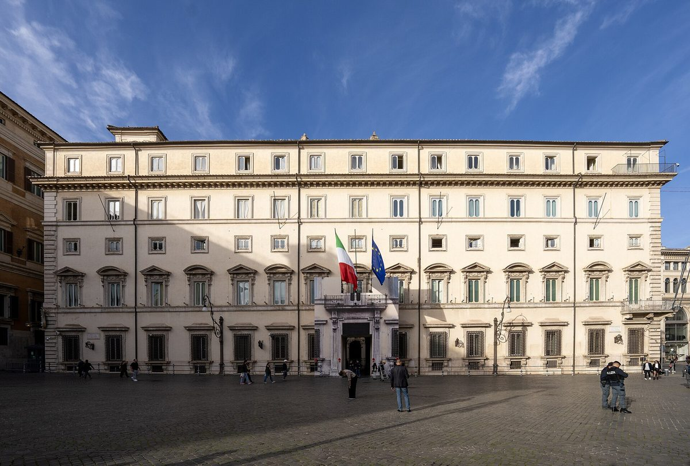

이탈리아 2027년 예산안, 학교·병원·대학 등 공공건물 에너지 개보수에 약 16억 유로…태양광 우선으로 소비 30% 감축 목표

EU와 합의한 에너지 국가 예외 조항 70억 유로에서 재원 마련…알려진 배분은 학교 6억5,000만·의료시설 6억·대학 2억·체육시설 1억5,000만 유로로 아직 확정 전
이탈리아 정부가 각료회의에서 승인한 2027년 예산안에 학교·대학·의료시설·체육시설 등 공공건물의 에너지 개보수 특별 계획이 담겼다. 재원은 EU와 합의한 에너지 분야 국가 예외 조항 70억 유로 가운데 약 16억 유로로, 건물 전체 에너지 소비를 30% 줄이는 것을 목표로 태양광 패널과 콘덴싱 보일러, LED 조명, 전기화를 추진하며 건물의 전력 수요는 태양광을 우선 써서 채우도록 했다. 아직 확정되지 않은 것으로 알려진 배분은 학교와 학교 건물에 6억5,000만 유로(2028년 1억5,000만 유로, 이후 2년 동안 해마다 2억5,000만 유로), 병원·의료시설에 2028~2030년 6억 유로, 대학·연구기관·예술음악고등교육기관에 2억 유로, 수영장·체육시설에 1억5,000만 유로다. 이 돈은 기존 지원 제도인 '콘토 테르미코(conto termico)'와 별도 몫으로 운영해 공공건물 지붕 태양광을 앞당길 계획이며, 각 부처가 대상 건물 목록과 사전 에너지 진단을 갖춰야 자금을 쓸 수 있고 세부 배정 기준은 이후 시행령으로 정한다. 잔카를로 조르제티(Giancarlo Giorgetti) 재무장관은 각료회의 뒤 기자회견에서 예외 조항으로 충당할 조치가 학교뿐 아니라 대학·병원·체육시설의 에너지 효율화에도 걸쳐 있다고 설명했다. 예산안은 의회 심의를 앞두고 있으며, 태양광 설비 용량이나 대상 학교 수는 공개되지 않았다.
시민에너지 관점
약 16억 유로를 학교·병원·대학 지붕에 넣으면서 소비 30% 감축과 '태양광 우선'을 원칙으로 못 박은 것은, 공공건물 지붕을 나라 전체의 발전소 목록으로 다루겠다는 뜻으로 보인다. 공공 예산으로 직접 짓는 것이 가장 빠르고 확실하다는 반론이 있겠지만, 나라가 돈을 대고 업체가 설치하는 방식만으로는 학교 지붕 아래 동네 주민이 전환의 구경꾼에 머물고, 배분액이 아직 확정되지 않은 지금처럼 예산이 흔들리면 사업도 함께 흔들린다. 독일에서는 시민에너지협동조합이 시청·학교 지붕을 빌려 주민 출자로 태양광을 올리고 수익을 조합원에게 나누는 방식이 오래 쓰여 왔는데, 이렇게 하면 공공 예산은 보일러 교체·조명 같은 효율 개선에 집중하고 지붕 발전소는 주민이 주인인 자산으로 남는다. 국내에서도 학교·공공건물 태양광을 예산 사업으로만 묶지 말고, 건물 에너지 진단 단계부터 주민 협동조합이 지붕 일부를 맡을 수 있는 몫을 정해야 한다.
출처: Orizzonte Scuola 2026-10-28 Andrea Carlino 원문 보기
イタリア2027年予算案、学校・病院・大学など公共建物のエネルギー改修に約16億ユーロ…太陽光優先で消費30%削減を目指す
EUと合意したエネルギー分野の国家例外条項70億ユーロから財源を確保…伝えられる配分は学校6億5,000万・医療施設6億・大学2億・スポーツ施設1億5,000万ユーロでまだ確定前
イタリア政府が閣議で承認した2027年予算案に、学校・大学・医療施設・スポーツ施設など公共建物のエネルギー改修の特別計画が盛り込まれた。財源はEUと合意したエネルギー分野の国家例外条項70億ユーロのうち約16億ユーロで、建物全体のエネルギー消費を30%減らすことを目標に、太陽光パネルやコンデンシングボイラー、LED照明、電化を進め、建物の電力需要は太陽光を優先して賄うとした。まだ確定していないとされる配分は、学校と学校施設に6億5,000万ユーロ（2028年に1億5,000万ユーロ、その後の2年間は毎年2億5,000万ユーロ）、病院・医療施設に2028〜2030年で6億ユーロ、大学・研究機関・芸術音楽高等教育機関に2億ユーロ、プール・スポーツ施設に1億5,000万ユーロだ。この資金は既存の支援制度「コント・テルミコ（conto termico）」とは別枠で運用し、公共建物の屋根への太陽光設置を前倒しする計画で、各省が対象建物の一覧と事前のエネルギー診断をそろえなければ資金を使えず、詳しい配分基準は今後の施行令で定める。ジャンカルロ・ジョルジェッティ（Giancarlo Giorgetti）経済財務相は閣議後の記者会見で、例外条項で賄う措置は学校だけでなく大学・病院・スポーツ施設のエネルギー効率化にも及ぶと説明した。予算案は議会審議を控えており、太陽光設備の容量や対象となる学校の数は公表されていない。
市民エネルギーの視点
約16億ユーロを学校・病院・大学の屋根に投じつつ、消費30%削減と「太陽光優先」を原則として明記したことは、公共建物の屋根を国全体の発電所リストとして扱うという意思表示とみられる。公共予算で直接建てるのが最も速く確実だという反論もあろうが、国がお金を出して業者が設置するやり方だけでは学校の屋根の下に暮らす地域住民は転換の見物人にとどまり、配分額がまだ確定していない今のように予算が揺らげば事業も一緒に揺らぐ。ドイツでは市民エネルギー協同組合が市庁舎や学校の屋根を借り、住民の出資で太陽光を設置して収益を組合員に分けるやり方が長く使われてきたが、こうすれば公共予算はボイラー交換や照明などの効率改善に集中でき、屋根の発電所は住民が持ち主である資産として残る。韓国でも学校・公共建物の太陽光を予算事業だけに縛らず、建物のエネルギー診断の段階から住民協同組合が屋根の一部を担える枠を定めるべきだ。
出典: Orizzonte Scuola 2026-10-28 Andrea Carlino 原文を読む
意大利2027年预算案拟投约16亿欧元用于学校、医院、大学等公共建筑能源改造…以光伏优先，目标减少30%能耗
资金来自与欧盟商定的能源领域国家例外条款70亿欧元…已知分配为学校6.5亿、医疗设施6亿、大学2亿、体育设施1.5亿欧元，尚未最终确定
意大利政府在部长会议上批准的2027年预算案中，纳入了针对学校、大学、医疗设施和体育设施等公共建筑的能源改造特别计划。资金来自与欧盟商定的能源领域国家例外条款70亿欧元中的约16亿欧元，以把建筑整体能耗降低30%为目标，推进光伏板、冷凝锅炉、LED照明和电气化，并规定建筑用电需求优先由光伏满足。据悉尚未最终确定的分配方案是：学校及校舍6.5亿欧元（2028年1.5亿欧元，此后两年每年2.5亿欧元），医院和医疗设施在2028～2030年获得6亿欧元，大学、科研机构和艺术音乐高等教育机构2亿欧元，游泳池和体育设施1.5亿欧元。这笔资金将独立于现有扶持制度"热能账户"（conto termico）单独运作，以加快公共建筑屋顶光伏建设；各部委须先备齐对象建筑清单和事前能源诊断才能使用资金，具体分配标准将由后续实施细则确定。经济和财政部长詹卡洛·焦尔杰蒂（Giancarlo Giorgetti）在部长会议后的记者会上表示，由例外条款覆盖的措施不仅涉及学校，也包括大学、医院和体育设施的能效提升。预算案尚待议会审议，光伏装机容量和涉及的学校数量均未公布。
市民能源视角
在把约16亿欧元投向学校、医院和大学屋顶的同时，把能耗减少30%和"光伏优先"明确为原则，似乎表明意大利要把公共建筑屋顶当作全国电站清单来对待。也许有人反驳说用公共预算直接建设最快、最可靠，但仅靠国家出钱、企业安装的方式，住在学校屋顶下的社区居民只能做转型的旁观者，而且一旦预算像现在分配额尚未确定时这样摇摆，项目也会跟着摇摆。在德国，市民能源合作社租用市政厅和学校屋顶、以居民出资安装光伏并把收益分给社员的做法已沿用多年；这样一来，公共预算可以集中用于更换锅炉、照明等能效改造，屋顶电站则作为居民当家作主的资产留下来。韩国也不应把学校和公共建筑光伏只捆绑为预算项目，而应从建筑能源诊断阶段起就划出由居民合作社承担部分屋顶的份额。
来源: Orizzonte Scuola 2026-10-28 Andrea Carlino 查看原文
Italy's 2027 budget earmarks about 1.6 billion euros for energy upgrades of schools, hospitals, universities and other public buildings, with solar first and a 30% cut in consumption as the goal
Funding comes from the 7 billion euro national energy safeguard clause agreed with the EU; the reported split of 650 million for schools, 600 million for health facilities, 200 million for universities and 150 million for sports facilities is not yet confirmed
The 2027 budget approved by Italy's Council of Ministers includes a special plan to upgrade the energy performance of public buildings such as schools, universities, health facilities and sports facilities. It draws about 1.6 billion euros from the 7 billion euro national safeguard clause on energy agreed with the EU, aims to cut the buildings' total energy consumption by 30% through solar panels, condensing boilers, LED lighting and electrification, and requires the buildings' electricity needs to be met first of all by solar power. The reported allocation, which has yet to be confirmed, gives 650 million euros to schools and school buildings (150 million in 2028 and 250 million a year in each of the following two years), 600 million to hospitals and health facilities over 2028-2030, 200 million to universities, research bodies and higher arts and music education institutions (Afam), and 150 million to swimming pools and sports facilities. The money is to be run as a separate allocation alongside the existing conto termico incentive in order to speed up solar on public roofs; ministries will have to draw up lists of the buildings concerned with prior energy audits before they can use the funds, and detailed allocation criteria will be set by later implementing decrees. Economy minister Giancarlo Giorgetti told a press conference after the cabinet meeting that the measures covered by the safeguard clause go beyond schools to include energy efficiency at universities, hospitals and sports facilities. The budget still faces parliamentary scrutiny, and neither the solar capacity involved nor the number of schools has been disclosed.
Citizen Energy View
Putting about 1.6 billion euros into the roofs of schools, hospitals and universities while writing a 30% consumption cut and a "solar first" rule into the plan suggests that Italy intends to treat public roofs as a national inventory of power plants. Some will argue that building directly with public money is the fastest and surest route, but if the state simply pays and contractors install, the neighbours living around the school remain spectators of the transition, and when the budget wavers, as it does now with the split still unconfirmed, the projects waver with it. In Germany, citizen energy co-operatives have long leased the roofs of town halls and schools, installed solar with residents' investment and shared the returns with members, which lets public budgets concentrate on efficiency work such as replacing boilers and lighting while the rooftop plants remain assets owned by residents. Korea, too, should not confine solar on schools and public buildings to budget programmes, but should set aside, from the energy audit stage onward, a share of roof space that residents' co-operatives can take on.
Source: Orizzonte Scuola 2026-10-28 Andrea Carlino Read the original